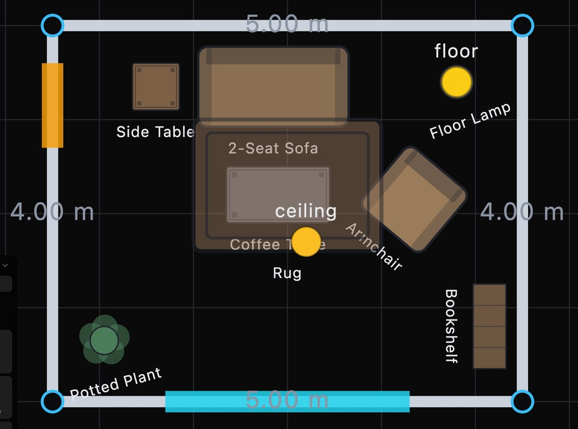
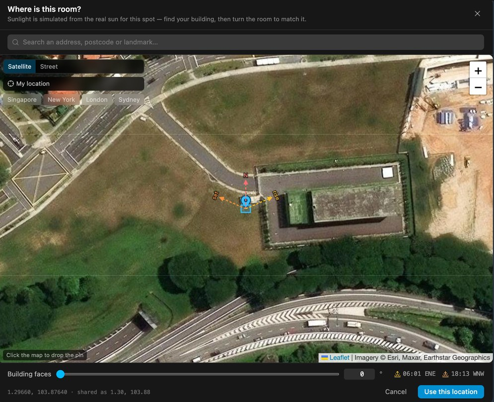
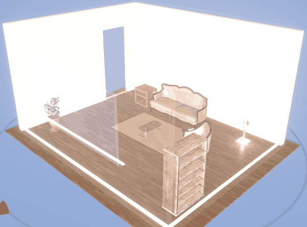
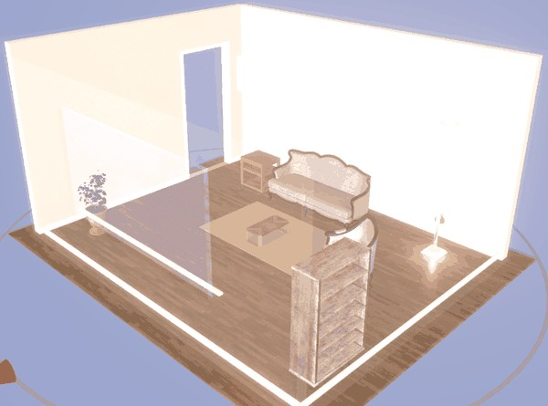
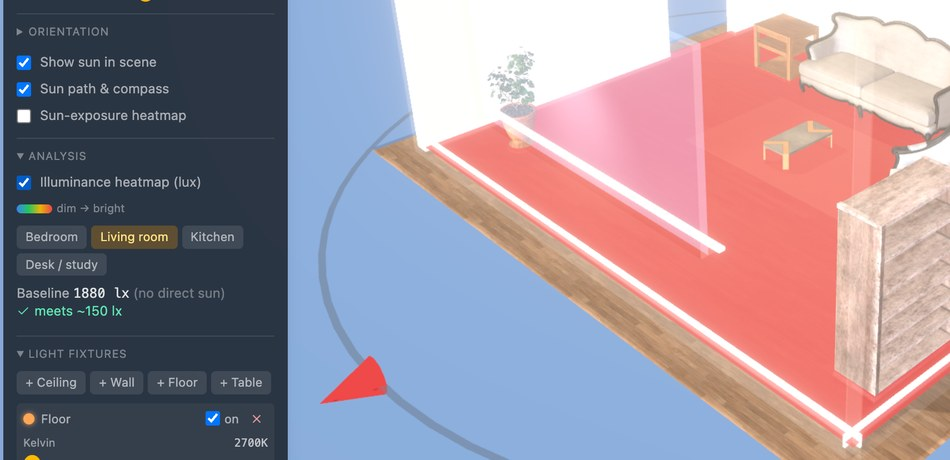

Draw your room, put it on the map, and see where the sunlight will actually fall in it, hour by hour, before you buy the furniture.
A browser tool can answer both questions that decide a room, will it fit and what will the light be like, and we measured both answers instead of asserting them.
A listing photo answers none of the questions that decide the money:
The move-in shopper: someone about to commit to a layout or a purchase for one specific room, who wants the answer before delivery day and will not install CAD software to get it.



MORNING
LATE AFTERNOON
The purpose: answer all four questions above in a browser, for that flat rather than a showroom, before any money changes hands. No CAD install, no account, and the core loop costs nothing to run.
Also in it: 35 catalogue pieces at verified real sizes, filtered by what fits the space you drew. Eight fixture types with real colour temperature and brightness. Blinds that block light. Export a file, or share a link that carries no address.
Give it a latitude, a longitude, a date and a time and there is exactly one correct answer for where the sun is. We compute that from the standard astronomical formulas, then rotate it by how far the building is turned from true north.
The 3D engine then casts shadows from a light pointing exactly that way, so the shadows on your floor are predictions you can check by standing in the room. Bounced light comes from a photographed 360° panorama of a real apartment rather than a flat grey fill.
Brightness on the floor is real units, not a look:
summed over daylight and every fixture, then compared against the level a room of that type needs.
| Option | Verdict |
|---|---|
| A mood preset what consumer planners do |
Rejected. Looks nice, says nothing about your flat. |
| Offline path tracing the best physics |
Rejected. Cannot scrub a day at 60 fps in a browser. |
| Baked lighting pre-computed, fast |
Rejected. Right for one layout, wrong once a chair moves. |
| Real-time shadows on a geographic sun | Chosen. Stays true while furniture moves. |
We rebuilt NOAA's published sun-position equations independently, sharing no code with the app, and compared. Every 10 minutes, all of 2026, three latitudes, 70,475 daylight readings.
| Site | Readings | Worst error |
|---|---|---|
| Singapore 1.35°N | 24,734 | 0.219° |
| New York 40.71°N | 24,301 | 0.219° |
| Reykjavík 64.15°N | 21,440 | 0.219° |
It is also checked against known answers: overhead at the equator at equinox noon (>85°), low in Oslo at midwinter (0–12°), below the horizon at midnight.
Ask a language model to arrange a room and it returns positions that look reasonable and put the sofa through the wall. So it never returns positions. It describes what it wants, and ordinary rule-based code does the placing.
| Option | Why rejected, or chosen |
|---|---|
| The model gives coordinates |
Rejected. Nothing checks it, failures are silent, and the same request gives a different room each time. |
| Fixed rules only, no model |
Rejected. Cannot understand "cozy", "a reading corner", or "under $3,000". |
| Model describes, solver places |
Chosen. The model reads intent; the code satisfies the hard rules. |
The placer checks every candidate spot against every rule: inside the room, not overlapping, walkway kept clear, door able to swing. It returns a checked position, or it says no and explains why.
Everything the app knows about a room lives in one plain JSON file. The 3D view draws it, the AI edits it, the server stores it, and nothing else is shared. Each version ships an upgrader, so a design saved months ago still opens. Your address is never in the file, only a coordinate rounded to about a kilometre.
200 seeded trials, 3 to 6 items each, rooms 3.5 to 7 m wide. The same 885 placement requests went to our placer and to a random-placement baseline, graded by one checker written separately from the placer. The workload includes an item too big to fit, so refusals reflect real failures.
| Placements that broke a rule | Random | Ours |
|---|---|---|
| Any rule broken | 89.2% | 14.9% |
| Outside the room | 50.5% | 0% |
| Overlapping another item | 74.8% | 0% |
| Walkway blocked | 44.6% | 14.9% |
| Door swing blocked | 26.2% | 0% |
| Said no, rather than placing badly | 0% | 19.1% |
Three of four failure types go to zero. The fourth is a real defect we found this way and left in (section 7). The baseline is random placement, not a language model: it shows these rules are hard to satisfy by chance, not that we beat an LLM.
Suite: core 133 · renderer 55 · ai 50 · api 230 · web 320 = 788 passing, 25 failing (section 7).
14.9% of placements leave a walkway blocked, which the placer's own documentation says cannot happen. Cause: it remembers each item's footprint but not the clear space in front of it, so item 2 can land in the walkway item 1 reserved. All 107 violations have that shape. The tests missed it: they check each item against the room as it was at the time, the same blind spot the placer has. We left it in because the measurement is the result.